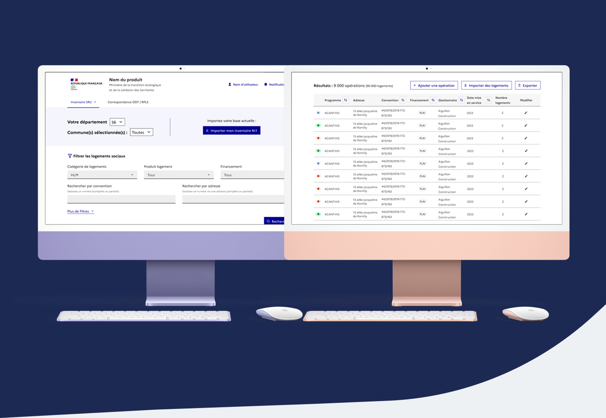

Étude de cas
Concevoir une interface claire pour un outil métier public (SRU - Ministère Écologie)
Transformer un outil complexe de suivi des logements sociaux en une interface plus lisible et exploitable, permettant aux collectivités et aux acteurs publics de mieux piloter leurs obligations.
Le point de départ
Dans le cadre d’un projet mené pour le Ministère de la Transition écologique, une plateforme numérique devait permettre de mieux suivre les opérations de logements sociaux, consolider les informations remontées localement et faciliter leur exploitation à différentes échelles administratives.
Le suivi reposait encore largement sur des fichiers Excel et des processus manuels. Cette manière de travailler rendait la gestion des données longue, sujette aux erreurs et difficile à consolider à l’échelle nationale. L’absence d’un outil centralisé ralentissait le reporting, complexifiait la prise de décision et augmentait la charge administrative pour les équipes.
La Product Owner du projet ne pouvait pas avoir de designer intégrée dans l’équipe et cherchait donc un soutien ponctuel pour la conception d’interfaces et l’accompagnement au handoff avec les développeurs. Mon rôle a été d’apporter un appui design concret sur un sujet métier dense, avec un double enjeu : rendre l’outil plus clair pour ses utilisateurs et aider la PO à gagner progressivement en autonomie sur le prototypage.

Projet : rendre un outil métier plus clair et plus exploitable
L’enjeu n’était pas seulement de produire des écrans, mais de transformer des besoins métiers complexes en interfaces compréhensibles, cohérentes et directement exploitables par les utilisateurs comme par les développeurs.
Clarifier l’accès à l’information
- Analyse des workflows existants et des besoins utilisateurs
- Travail sur la hiérarchie visuelle et la lisibilité des données
- Structuration d’écrans métiers plus clairs pour consulter, filtrer et comprendre l’information
- Recherche d’un bon équilibre entre densité d’information et simplicité d’usage
Concevoir des interfaces prêtes à vivre
- Conception d’interfaces haute fidélité directement dans Figma
- Création de prototypes interactifs pour montrer les parcours et les interactions
- Alignement régulier avec les parties prenantes métier et les développeurs
- Travail sur la cohérence UI, l’accessibilité et le handoff
Accompagner le projet dans la durée
Mon intervention ne s’arrêtait pas à la production de maquettes. Elle visait aussi à rendre le design utile dans le quotidien du projet, en facilitant les échanges, les arbitrages et l’appropriation des écrans.
- rendre les intentions de design plus concrètes grâce au prototypage
- fluidifier la collaboration entre PO, métier et développement
- produire des livrables directement actionnables
- faire monter la PO en autonomie sur la conception et le prototypage
Ce que ça a changé
La mission a permis de structurer une proposition d’interface plus claire et plus exploitable pour un produit métier dense, tout en facilitant la collaboration entre les parties prenantes institutionnelles, la Product Owner et les développeurs.
Ce que j’ai apporté à ce projet
Sur cette mission, j’ai apporté un support design à la fois opérationnel et structurant. Mon rôle a consisté à traduire des besoins fonctionnels et réglementaires en interfaces compréhensibles, tout en rendant le design directement utile au projet.
Ce projet montre aussi ma manière d’intervenir dans des environnements publics et contraints : rendre l’information plus claire, produire des livrables solides pour l’implémentation, et soutenir les équipes pour que le design serve réellement l’avancement du produit.
Exemples de livrables
